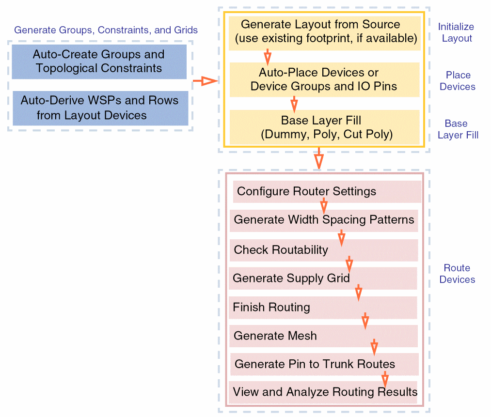

Virtuoso Automated Device Placement and Routing Flow
The following diagram summarizes the Virtuoso automated device placement and routing flow.

- Initialize Layout: The first step is layout generation. Information about the PR boundary, instances, nets, and pins is generated in the target layout as per the source schematic.
- Generate Groups, Constraints, and Grids: Registered circuit finders are run on the schematic instances and nets to identify all compatible structures. These structures are then grouped into constraints and constraint groups and generated in the layout cellview. Information about any existing Width Spacing Patterns (WSPs), row regions, and diffusion grids is also transferred.
- Place Devices: The automated device placement and routing flow supports two placement objectives—design compaction and better routability. In this step, you select a placement objective and then run the placer.
- Base Layer Fill: After placement, the gaps between devices are filled with either dummy fill and poly fill, where applicable. Inserting fill helps maintain continuity of instances within each row and ensures that the design is DRC-clean and meets density requirements.
- Configure Router Settings: The first step is to specify the routing options made available in the Routing assistant.
- Generate Width Spacing Patterns: Width spacing patterns can be generated, imported, or edited in the design for valid routing layers as required.
- Check Routability: In this step, routability checks are run to identify and flag potential issues with the design before running the router.
- Generate Supply Grid: Power rails are generated for power and ground nets.
- Finish Routing: Completes the routing for all/selected nets in the design using the Auto (for all/selected nets) or Assisted (selected nets only) routing options in the selected scope.
- Generate Mesh: Meshes on selected layers can be generated for selected critical nets. These meshes can then be used to establish connections with pins using second-level trunks.
- Generate Pin to Trunk Routes: Trunks are generated on a selected layer and the instance pins can then be connected to the generated trunks.
- View and Analyze Routing Results: Routing results are analyzed in a single table using the Routing Results Browser. It shows routing information such as the number of opens, shorts, wire lengths, DRC violations, and vias.
Related Topics
Initializing a Layout in the Automated Device Placement and Routing Flow
Generating Constraints and Constraint Groups
Deriving Row Regions and Grids in the Automated Device Placement and Routing Flow
Placing Devices Automatically in the Automated Device Placement and Routing Flow
Generating and Deleting Base Layer Fill
Checking Layout Routability after Generating Grids and Running Device Placer
Finishing Routing for Signal Nets
Generating Mesh for Selected Nets
Generating Pin to Trunk Routing for Selected Nets
Viewing and Analyzing Device-Level Routing Results
Return to top